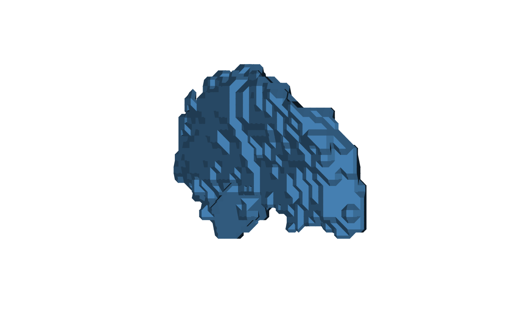
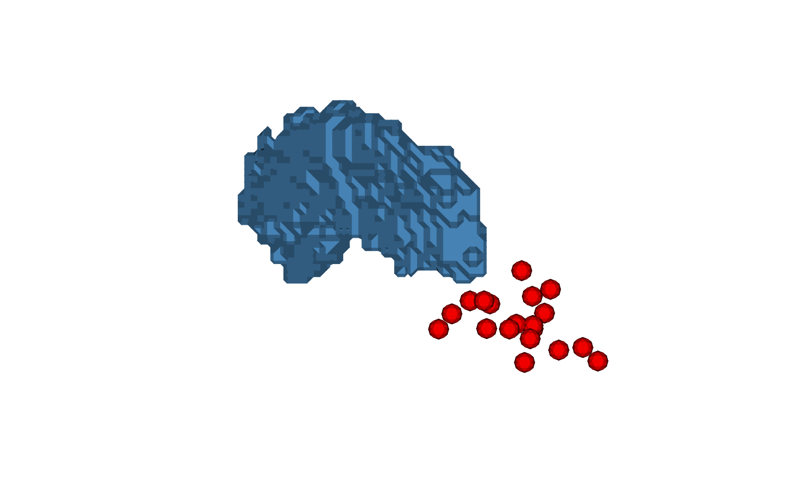

Render one or more meshes as flat-shaded triangles in base R
Source:R/plot-mesh-polygon.R
plot_mesh_polygon.RdProjects each triangular face onto a 2D plane using an orthographic camera,
shades it with a single color proportional to how directly it faces the
camera (Lambert), depth-sorts all faces across all meshes, and draws them
in a single polygon call.
Meshes without faces (point clouds) are substituted by a small sphere
(vcg_sphere) centered at each point and scaled by
cex; they then participate in the same rendering pipeline as ordinary
faced meshes.
A camera-facing clipping pass discards triangles whose outward normal
points along the camera ray (signed \(n \cdot z_{cam}\) \(> 1 - \mathrm{mesh\_clipping}\)),
peeling the front cap off the surface so the back wall (and any
interior meshes) become visible. Set mesh_clipping = 1 to disable
clipping. Point-cloud meshes (those rendered as substitute
vcg_sphere instances) are exempt from this clip so they
remain solid even when the enclosing surface is peeled.
Multiple meshes share a single depth space: all faces are projected, sorted, and drawn together so the painter's algorithm works correctly across meshes.
Usage
plot_mesh_polygon(
mesh,
eye = c(0, 0, 1000),
lookat = c(0, 0, 0),
up = c(0, 1, 0),
col = c("white", "gray30"),
cex = 1,
add = FALSE,
axes = FALSE,
asp = 1,
xlim = NULL,
ylim = NULL,
zoom = 1,
xlab = "",
ylab = "",
main = "",
side = c("front", "back", "both"),
mesh_clipping = 1,
sphere_subdivision = 1L,
alpha = 1,
shadow_color = NULL,
light_intensity = 1,
ambient_intensity = 0.2,
clipping_plane = NULL,
clipping_plane_enabled = TRUE,
...
)Arguments
- mesh
a
'mesh3d'object, or a list of'mesh3d'objects. Meshes without a face matrix ($it) are rendered as sphere instances (onevcg_sphereper vertex, radiuscex).- eye
numeric vector of length 3 - camera position in world space.
- lookat
numeric vector of length 3 - the world-space point the camera is looking at.
- up
numeric vector of length 3 - world-space "up" direction; defaults to
c(0, 1, 0).- col
base color(s) per mesh. Same forms as
plot_mesh_dotcloud: a single color, a depth-gradient vector, a per-vertex character vector, or a list of any of these (one element per mesh). Defaultc("white", "gray30").- cex
radius of the substitute sphere used for point-cloud meshes (world units). Has no effect on meshes that already have faces. Default
1.- add
logical; if
TRUEthe faces are added to an existing plot instead of opening a new one. DefaultFALSE.- axes, asp, xlim, ylim, xlab, ylab, main
passed to
plot.defaultwhenadd = FALSE.- zoom
positive numeric magnification applied to the auto-computed axis limits when
xlimorylimisNULL. Values greater than1zoom in, values in(0, 1)zoom out. Whenaspis set, the zoom is plot-region aware (queried viapar("pin")): the axis that already fills the device afterasp-induced expansion is zoomed by exactlyzoom, and the other axis is zoomed less so the data fills more of the plot region while preserving the requestedasp. Ignored for any axis whose limit was supplied explicitly, and whenadd = TRUE. Default1.- side
which side of each triangle to render. One of
"front"(default),"back", or"both"(shows all triangles).- mesh_clipping
numeric in
[0, 1]controlling camera-facing clipping: any triangle whose signed Lambert dot product (\(n \cdot z_{cam}\), i.e. positive for front-facing) is at or abovemesh_clippingis discarded. A value of1(default) keeps the full surface;0.5peels a 60-degree cap off the front and reveals the back wall (whose absolute Lambert shade is still large, so it renders brightly);0clips every front-facing triangle and shows the interior only. Back-facing triangles are never clipped by this rule. Default1.- sphere_subdivision
integer subdivision level forwarded to
vcg_spherewhen substituting point clouds. Higher values give smoother spheres at the cost of more triangles. Default1(80 triangles per sphere).- alpha
numeric in
[0, 1]; one value per mesh (recycled), sets the transparency of each mesh (1= fully opaque,0= fully transparent). Faces belonging to a mesh withalpha = 0are dropped entirely. Because faces are drawn in back-to-front (painter's) order, alpha blending across multiple meshes follows that order. Default1.- shadow_color
color used for fully unlit (grazing/back) faces. The Lambert shade linearly interpolates from
shadow_color(atshade = 0) toward the face color lit by a white light (atshade = 1), so unlit faces fade to this color instead of an implicit black background. Defaultpar("fg"), so the shadow contrasts with the current device's canvas.- light_intensity
non-negative scalar controlling the brightness of the (white) light source: at
shade = 1the face color is multiplied bylight_intensity(clamped to[0, 1]).1(default) reproduces the face color exactly when fully lit; smaller values darken the whole mesh, larger values saturate.- ambient_intensity
scalar in
[0, 1]acting as a lower bound on the Lambert shade so grazing/back faces still receive some light and never collapse fully toshadow_color. An effective shade ofmax(shade, ambient_intensity)is used in the background-to-light blend. Default0.2.- clipping_plane
optional list of world-space clipping planes used to hide parts of the scene. Each plane is a numeric vector of length 5: the first three entries are the plane normal \((n_x, n_y, n_z)\) (must be non-zero; normalized internally), the fourth is the signed distance from the world origin to the plane along that normal (so the plane equation is \(n \cdot x = d\)), and the fifth indicates which half-space is kept:
1keeps the front side (the side the normal points to),-1keeps the back side, and0keeps whichever side currently faces the camera (auto-flipped per call based oneye). Multiple planes are intersected. Clipping is applied per face using the face centroid (a face is kept only when its centroid lies on the kept side of every plane). A single length-5 numeric vector is also accepted as shorthand for a one-plane list. DefaultNULL(no clipping).- clipping_plane_enabled
logical vector, one entry per mesh (recycled), controlling whether
clipping_planeis applied to that mesh.TRUE(default) means the mesh participates in clipping;FALSEexempts the mesh entirely (all of its faces are kept regardless of the clipping planes). Has no effect whenclipping_planeisNULL.- ...
additional graphical parameters forwarded to
plot.default(new plot only).
Details
Limitations of the base-R polygon path (no rgl):
Flat shading only - one color per triangle. No per-vertex color interpolation.
No depth buffer - faces are depth-sorted by centroid (painter's algorithm). Interpenetrating triangles can render in the wrong order.
Anti-aliasing seams can appear between adjacent triangles on raster devices; Cairo-based devices (
png(type = "cairo"),svg(),pdf()) produce cleaner output than the default quartz/X11 path.
Coercing Surface Inputs
The surface objects are converted to 'mesh3d' object before
applying further calculations.
When surface is a surface ieegio object, the returned
mesh3d$vb contains vertices that have been left-multiplied by
surface$geometry$transforms[[1]] (the first transform stored in the
geometry, typically the ScannerAnat or voxel-to-world transform).
Breaking change: Earlier versions (before 0.2.6) of ravetools
returned the raw surface$geometry$vertices without applying any
transform, so downstream code often multiplied by
surface$geometry$transforms[[1]] (or an equivalent) manually before
working in world space. Such code will now double
apply the transform and produce incorrect coordinates. If you previously
applied a transform from surface$geometry$transforms by hand after
calling a ravetools mesh function on an 'ieegio_surface',
remove that manual step.
Surfaces with an empty or missing geometry$transforms list (for
example, surfaces produced by ieegio's volume_to_surface,
which stores an identity transform) are unaffected.
If geometry$transforms contains multiple transforms targeting
different coordinate spaces, only the first one is used. Callers that need
a specific target space should select and apply that transform themselves
before calling ravetools mesh functions.
Examples
mesh <- vcg_isosurface(left_hippocampus_mask)
# Surface alone
plot(
mesh,
eye = c(150, 30, 0),
lookat = c(0, 0, 0),
up = c(0, 0, 1),
col = "steelblue"
)

# Surface + electrode point cloud (rendered as small icospheres)
n_elec <- 20
electrodes <- structure(
list(vb = matrix(rnorm(3 * n_elec, sd = 5), 3, n_elec) +
rowMeans(mesh$vb)[1:3]),
class = "mesh3d"
)
plot_mesh_polygon(
mesh = list(mesh, electrodes),
eye = c(150, -30, 0),
lookat = c(0, 0, 0),
up = c(0, 0, 1),
alpha = c(0.5, 1),
col = list("steelblue", "red"),
cex = 1.5
)
